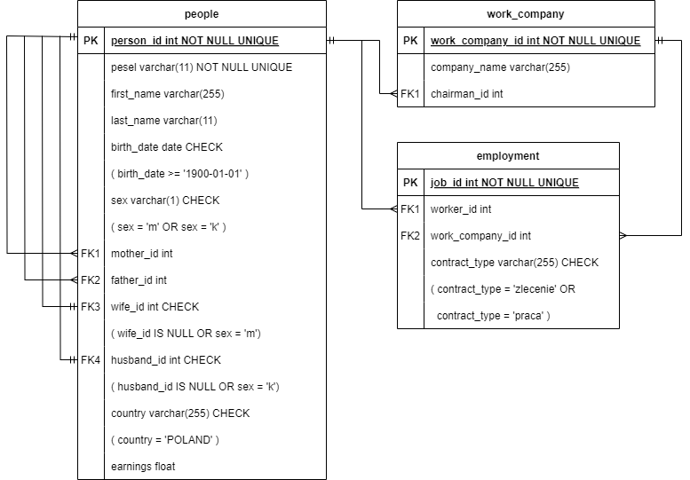

SQL Databse and it's querries.
SQLite
create database
```shell
sqlite3 census.db
```
list tables
```shell
.tables
```
table schema
```shell
.schema tablename
```
sqlite help
```shell
.help
```
Generating Data

Created tables
- my_create.sql - definition of the tables
- data
- add_people.sql - add data to people table
- add_work_company.sql - add data to work_company table
- add_employment.sql - add data to employment table
Chat GPT an Perplexity were used to generate data to feed the database.
Find duplcated PESELs - works
```shell
grep -oE '\b[0-9]{11}\b' add_people.sql | sort | uniq -d
```
Find duplcated PESELs - doesn't work
```shell
# regex
\b(\d{11})\b(?=.*\b\1\b)
grep -oE '\b[0-9]{11}\b' add_people.sql | sort | uniq -d | grep -Ff - add_people.sql
# didn't try
grep -oE '\b[0-9]{11}\b' add_people.sql | awk '{count[$0]++} END {for (num in count) if (count[num] > 1) print num}'
```
substitute part of a string
in this case:
change every 5-zeros string like "0000" into ranfom 5-digit number
```shell
# didn't try
while grep -q "00000" file.txt; do
sed -i "0,/00000/s//$(shuf -i 10000-99999 -n 1)/" file.txt
done
# works
perl -i -pe 's/00000/sprintf("%05d", int(rand(100000)))/ge' file.txt
```
Table Indexing
```sql
CREATE INDEX idx_first_name ON people (first_name);
CREATE INDEX idx_last_name ON people (last_name);
CREATE INDEX idx_pesel ON people (pesel);
CREATE INDEX idx_oneGenerationFamily_manAsRoot
ON people (person_id, wife_id);
CREATE INDEX idx_oneGenerationFamily_womanAsRoot
ON people (person_id, husband_id);
CREATE INDEX
idx_oneGenerationFamily_withParents_manAsRoot
ON people (person_id, wife_id, father_id);
CREATE INDEX
idx_oneGenerationFamily_withParents_womanAsRoot
ON people (person_id, husband_id, mother_id);
```sql
Deleting Indexes Example
```sql
ALTER TABLE people DROP INDEX idx_first_name;
```